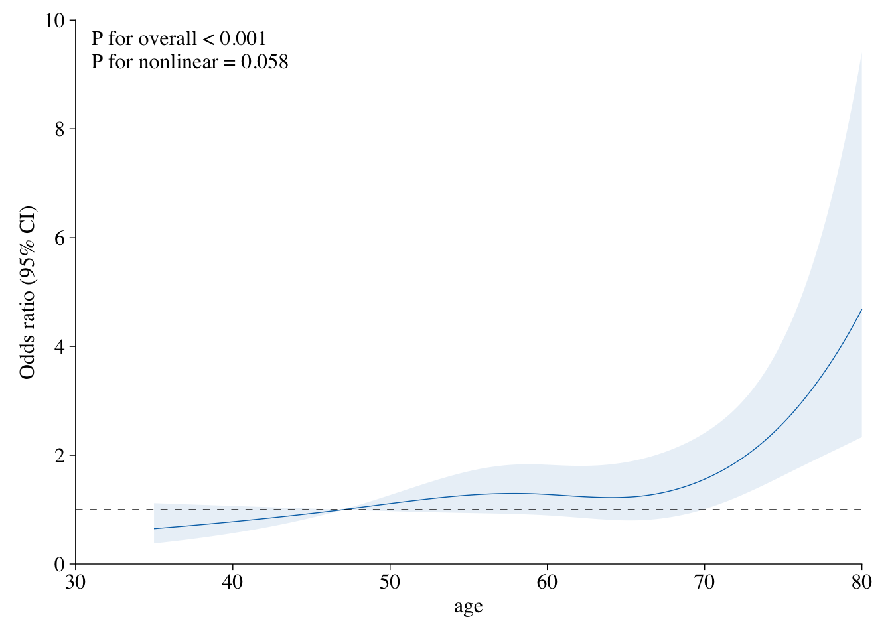
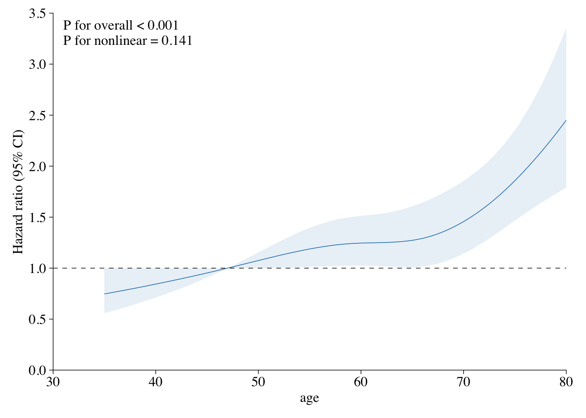

# install.packages('plotRCS')
library(plotRCS)헬스케어 분야에서 연구를 하다보면, 특정 변수의 변화에 따라 결과가 어떻게 나타나는지 확인해야하는 경우가 있습니다.
그 중에서 로지스틱 회귀분석으로 산출된 Odds ratio(OR)나 Cox regression을 통한 Hazard ratio(HR)를 3차 곡선으로 표현할 수 있는데요.
바로 Restricted Cubic Spline(RCS) curve 를 이용하는 것입니다.
RCS curve를 이용하면, 공변량을 고려했을 때 특정 변수의 변화에 따라 OR/HR이 어떻게 나타나는지, 그리고 그 차이는 통계적으로 유의미한지 곡선으로 시각화하여 파악할 수 있습니다.
plotRCS를 이용하면 RCS curve를 정말 간단하게 그릴 수 있습니다.
plotRCS 패키지에 있는 cancer 데이터를 사용해 예시를 보여드리겠습니다.
head(cancer)cancer데이터는 간암에 대한 데이터로서, 변수들은 크게 다음과 같습니다.
- age: 나이
- sex: 성별 (Male, Female)
- race: 인종 (White, Black, Other)
- size: 종양의 크기
- status: 결과 (Censored, Dead)
- time: 관찰기간
로지스틱 회귀분석 RCS cure
rcsplot() 함수 내에 필요한 인자들만 입력하면 RCS curve가 그려집니다.
입력해줘야 할 인자는 data, outcome, exposure, covariate입니다.
rcsplot(
data=cancer,
outcome='status',
exposure='age',
covariates=c('sex','race','size', 'metastasis')
)
Figure: Association Between age and status Using a Restricted Cubic Spline Regression Model.
Graphs show ORs for status according to age adjusted for sex, race, size, metastasis. Data were fitted by a logistic regression model, and the model was conducted with 4 knots at the 5th, 35th, 65th, 95th percentiles of age (reference is the 5th percentile). Solid lines indicate ORs, and shadow shape indicate 95% CIs. OR, odds ratio; CI, confidence interval.
Cox 회귀분석 RCS curve
Cox 회귀분석인 만큼, 기존에 입력하는 변수들과 더불어 시간 변수를 입력해줘야 합니다.
rcsplot(
data=cancer,
outcome='status',
exposure='age',
time='time',
covariates=c('sex','race','size', 'metastasis')
)
Figure: Association Between age and status Using a Restricted Cubic Spline Regression Model.
Graphs show HRs for status according to age adjusted for sex, race, size, metastasis. Data were fitted by a restricted cubic spline Cox proportional hazards regression model, and the model was conducted with 4 knots at the 5th, 35th, 65th, 95th percentiles of age (reference is the 5th percentile). Solid lines indicate HRs, and shadow shape indicate 95% CIs. HR, hazard ratio; CI, confidence interval.